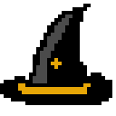

<!--
  Generated template for the AccessoriesPage page.

  See http://ionicframework.com/docs/components/#navigation for more info on
  Ionic pages and navigation.
-->
<ion-header>

    <ion-navbar>
      <ion-title>accessories</ion-title>
    </ion-navbar>
  
  </ion-header>
  
  
  <ion-content padding>
    <div class="screen">
      <ion-icon id="backBtn" (click)="changePage($event)" name="arrow-dropleft-circle"></ion-icon>
      <h1 style="text-align: center">Accessories</h1>
      <ion-list>
          <ion-item style="height: 90px;">
            <ion-thumbnail item-start>
              
            </ion-thumbnail> 
            <h3>{{santa1}}</h3>
            <h3>{{santa2}}</h3>
            <!-- <button ion-button clear item-end>View</button> -->
          </ion-item>
          <ion-item style="height: 90px;">
              <ion-thumbnail item-start>
                
              </ion-thumbnail>
              <h3>{{witch1}}</h3>
              <h3>{{witch2}}</h3>
              <!-- <button ion-button clear item-end>View</button> -->
            </ion-item>
            <ion-item style="height: 90px;">
                <ion-thumbnail item-start>
                  
                </ion-thumbnail>
                <h3>{{knit1}}</h3>
                <h3>{{knit2}}</h3>
                <!-- <button ion-button clear item-end>View</button> -->
              </ion-item>
            
        </ion-list>
      </div>
  
  </ion-content>
